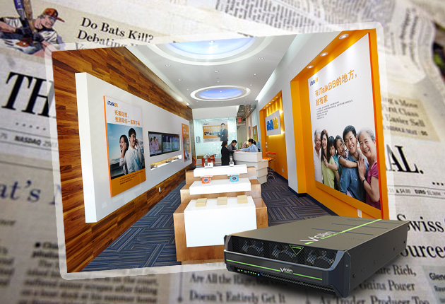
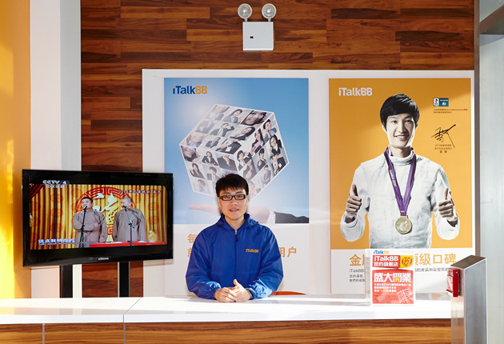
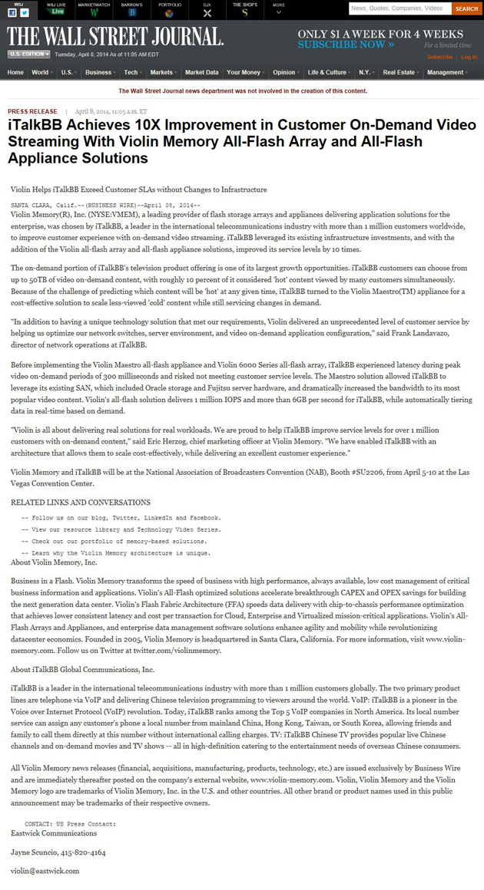

華爾街日報：iTalkBB引入頂尖技術，影音效果提升10倍
據《華爾街日報》報導，近日，"國際電信業翹楚"iTalkBB與頂級存儲記憶設備提供商Violin Memory(R) (NYSE:VMEM)達成合作。後者將為iTalkBB提供全線閃存陣列與設備升級，提升存儲能力及傳輸速度高達數十倍。這意味著，iTalkBB將帶給其中文電視及電話用戶行業內前所未有的高端、順暢體驗。
《華爾街日報》撰文高度評價了本次合作，稱考慮到iTalkBB擁有全球超過百萬的龐大用戶量，而iTalkBB中文電視中又有數十萬小時的豐富點播內容，Violin本次提供的服務是"特殊定製"，"史無前例"的，能保證十倍以上的技術提升。 "Violin致力於為大負荷量的大型企業提供存儲解決方案，合作夥伴包括IBM, Cisco, HP, Oracle等。這次能與iTalkBB這樣的全球電信領導者合作，幫助他們為超過百萬用戶帶去更好的體驗是我們的榮幸"Violin Memory的CMO (Chief Marketing Officer)如是說。這對於傳輸環境依賴較高的網絡電視而言，是具有劃時代里程碑意義的壯舉。
iTalkBB電視點播中的全部熱門節目將以"快照"方式被雲存儲。用戶一旦點播，被點內容將被直接打開，省去了從後台調取、傳輸的全部過程，不僅能真真正正做到"零緩衝"、"零延遲"、"零卡頓"，而且還免去了音畫在傳輸中的折損和丟幀，讓用戶暢享影院級別的頂級視聽盛宴。自此，iTalkBB電話和電視的每秒傳輸速度可高達6GB/秒，即便是在春節的最高峰時段，百萬人同時觀看春晚，或是撥打電話，都不會出現任何問題，遠遠甩開所有同類產品。
從十一年前創立，到現今用戶遍及美國、加拿大、澳大利亞、新加坡等地，iTalkBB的超高口碑及人氣，與其"將完善用戶體驗放在首位"的宗旨息息相關。此次我們不惜重金，用數百萬美元引進最尖端技術，力求為用戶提供最完美的服務的原因也在此。 iTalkBB網絡運營總監Frank Landavazo表示，"即便是幾毫秒的停留對於用戶體驗都是一種損害，iTalkBB追求的是'零緩衝'順暢傳送頂級視聽"。不僅要讓用戶滿意，更要超越他們的期待，是讓iTalkBB從市場中脫穎而出的根本。
迅捷貼心的服務，臻至完美的體驗，iTalkBB一直努力。
下附華爾街日報全文（點擊圖片查看大圖）：
{kind=link}
iTalkBB全面啟動省錢風暴，優惠多多。詳情請撥打24小時服務熱線1877-482-5522或登入www.iTalkBB.com查詢詳情。